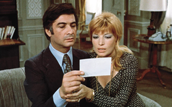
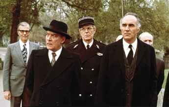
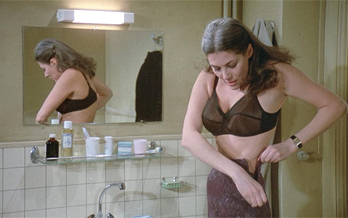
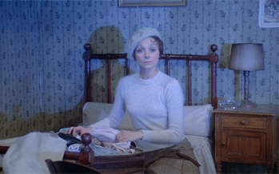
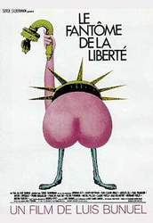
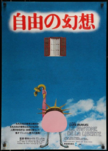
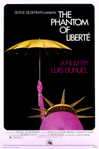

Jean-Claude Brialy - Mr Foucauld
Monica Vitti - Mrs Foucauld
Julien Bertheau - First Prefect of Police
Michel Piccoli - Second Prefect of Police


Anne-Marie Deschodt - Mlle Edith Rosenblum
Milena Vukotic - Nurse

Man with photos
Father Gabriel, Monk
Monk
Young Monk
Old Monk
Hostess of the toilet reception
Charles, host of the toilet reception
Mrs Calmette
Mr Legendre
Mme Legendre
Headmistress
Judge
As unusual, eccentric, bizarre but interlinking vignettes of mundane and seemingly innocuous conventions of our social and private lives: success, one another, Napoléon Bonaparte's troops, earthly monks, dangerous snipers and the peculiar disappearance of a beloved one metamorphose into banal instances of our daily existence. With this in mind, under those surreal circumstances, the abnormal becomes normal, the obvious transforms into something unclear or even invisible, and the extraordinary transfigures into ordinary. But, are things always black and white? How real is the haunting spectre of liberty?
The title is a reference to The Communist Manifesto which in English begins: "A spectre is stalking Europe, the spectre of Communism." The French translation known to Buñuel translated "spectre" as "fantome". So the title can be seen as a dig at the "Bourgeois" mentality which fears freedom, and also a sideswipe at the rather straightjacketed Communist parties of the time.
In an example of Buñuel's trademark of insect imagery, the character Foucauld places a large framed spider on the mantelpiece after declaring that he is "sick of symmetry".


